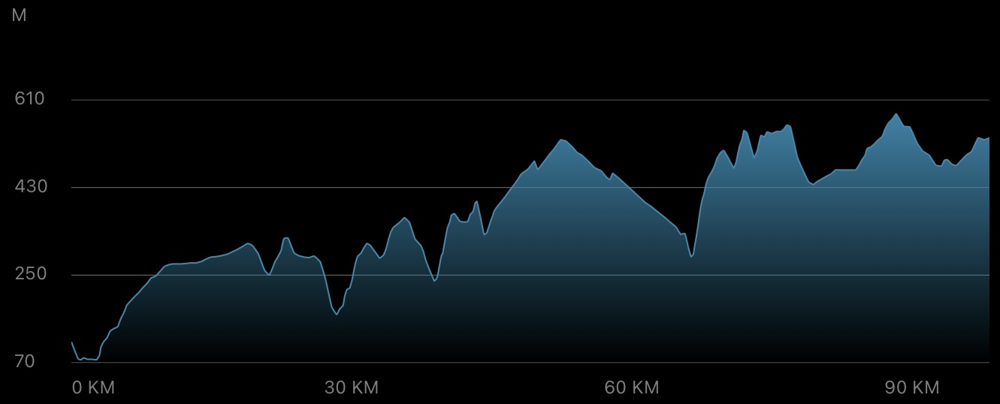
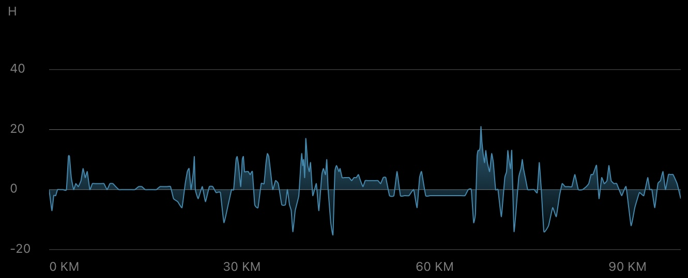
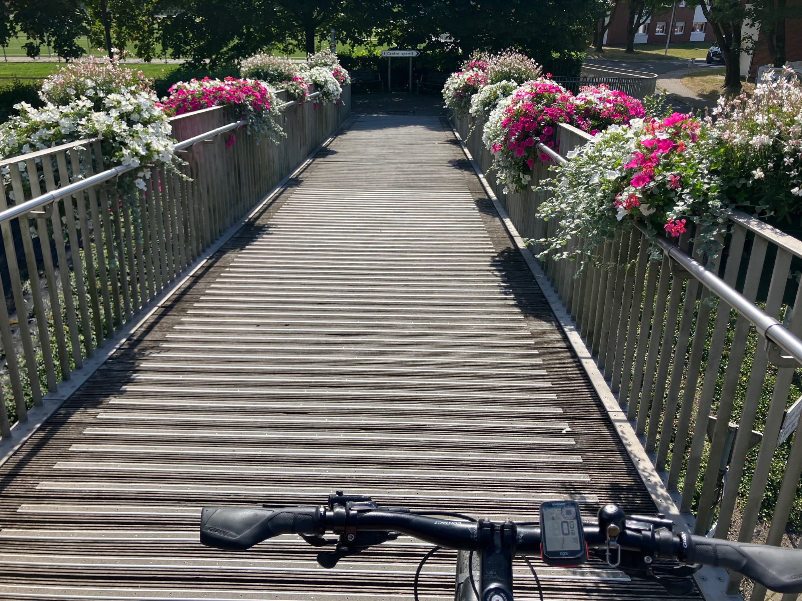
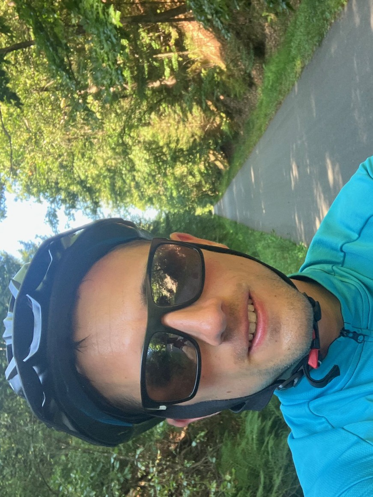
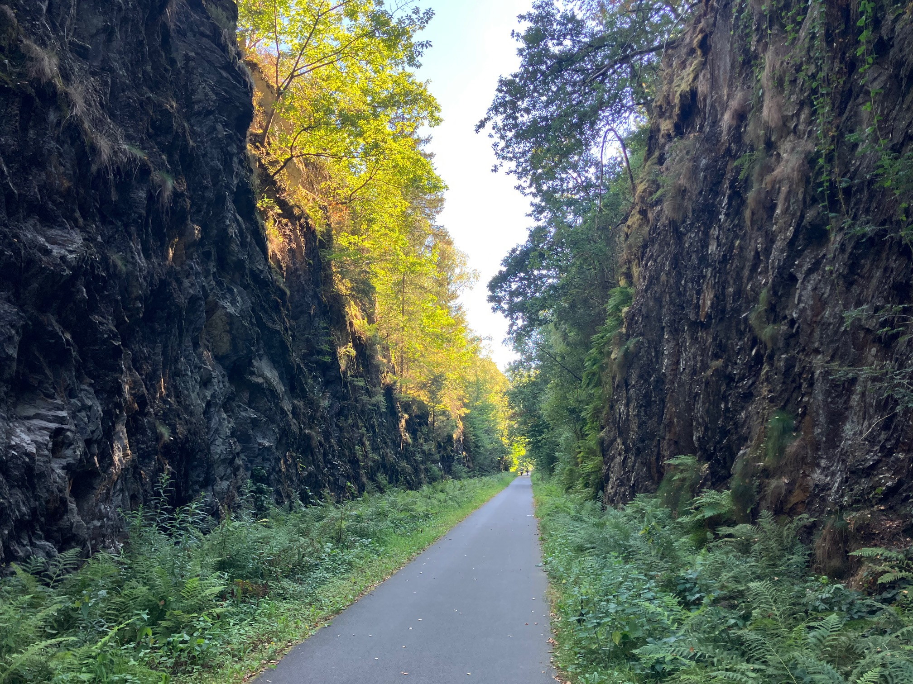
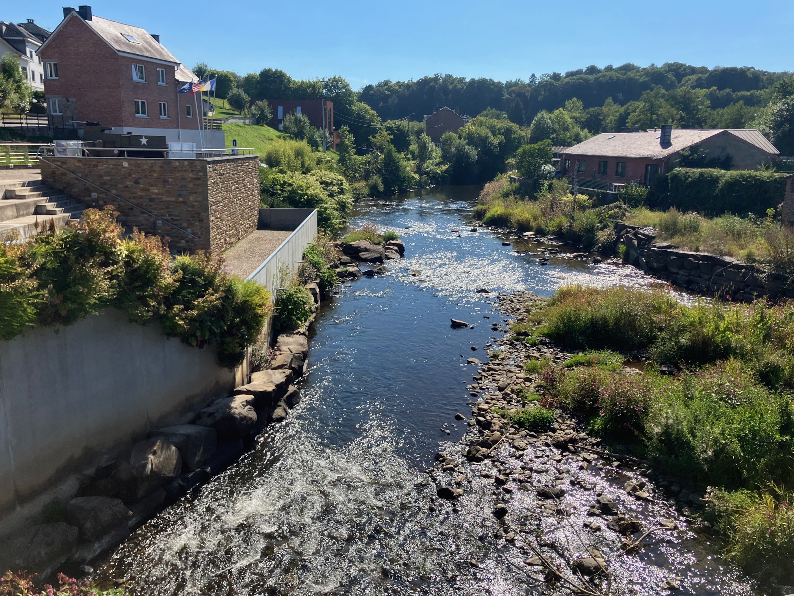
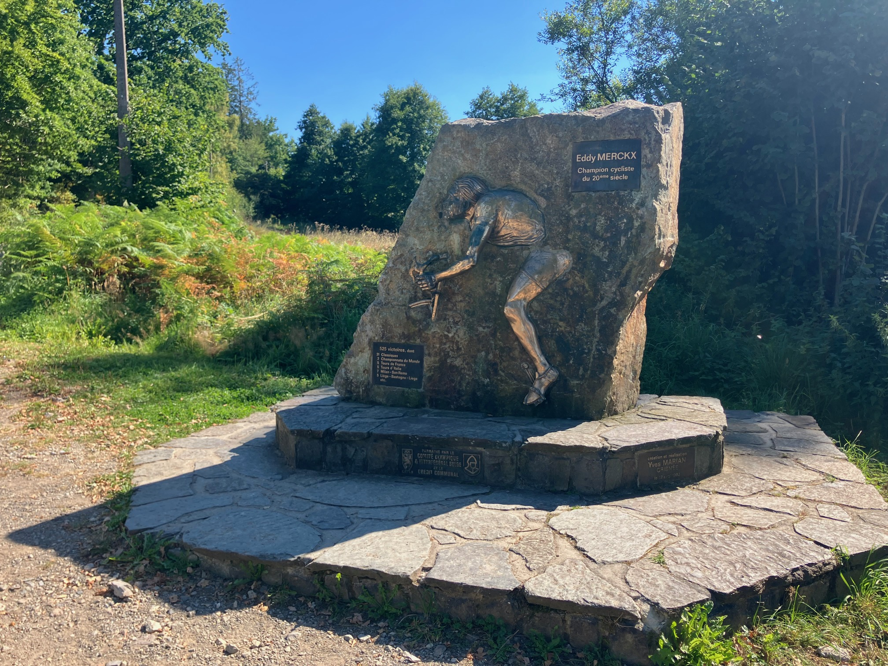
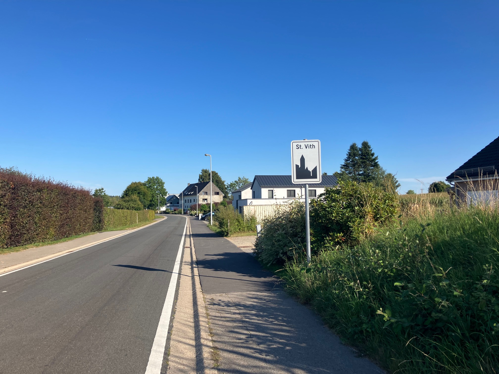

Daily Stats*
| Distance |
99.15 km |
| Time |
6:40:40 h |
| Avg. Speed |
14.8 km/h |
| Max. Speed |
40.8 km/h |
| Avg. Heart Rate |
134 bpm |
| Uphill |
1695 m |
| Downhill |
1242 m |
| Avg. Temperature** |
22.0 °C |

Elevation profile [m]

Slope profile [%]
*measured by Garmin Forerunner 945 & Sigma ROX 4.0
**measured at the lower back
Daybook
After a restful night in Liège, I carried on my tour in the morning. Initially, I had planned to stay at a campsite in Deidenberg, but following my recent experiences with intimate closeness to small animals, I opted for a comfortable room in St. Vith instead. Either way, the riding conditions are pretty much the same: a challenging medium to long distance track with a lot of uphill climbing — we're getting closer to the Eifel again ...
Blue skies, only scattered clouds, and sunshine with ongoing moderate temperatures around 20°C provided an excellent setting for the now 13th leg. Everything started with a short climb between kilometer 3 to 7, followed by a changeover to the RAVeL bike path. The RAVeL is a cycling and hiking trail network in Wallonia, covering about 1500 km. Via Beyne-Heusay and Fléron, this path led to me Herve, with a gentle incline of 1% to 5%. In Herve, I left the RAVeL and continued on rather unpaved terrain. One of the “highlights” was the rocky path past Polleur and Nardaie de Polleur, which ran partly under the highway bridge. For the second time on this tour, I had to bow to the difficult ground and push my bike uphill for a few meters ...
Over hill and dale, I worked my way to about kilometer 45, where I (happily) returned to the RAVeL. Riding up a slight incline, I headed for my first break of the day and rested for a few minutes after about 50 km with snacks and drinks.
Then I continued on the RAVeL, first slightly uphill, then a long downhill stretch, until I arrived in Stavelot at around 65 kilometers. Via the cobbled streets in the center, I reached the next climb, the Stèle Eddy Merckx. This is a category 3 climb, which is about 2.3 kilometers long and leads over the Côte de Stockeu. With an average gradient of around 10% and maximum gradients of just over 20%, it is a difficult climb, and it is no coincidence that this part is included in the classic Liège-Bastogne-Liège cycle race. At the summit, there is a memorial stele to Eddy Merckx in recognition of his achievements in the region (he won the classic race five times), which I photographed as a “reward” (see Impressions).I would say that Eddy Merckx would be proud of me if he had seen me climb up there with 18 kg of luggage :-)
The route then descended slightly via Petit-Thier and rejoined the RAVeL, which took me through the Emmelserwald on the last long climb of the day. I “slipped” out onto the N675c and at around kilometer 86 I should have turned off at Rodt near St. Vith. However, Rodt doesn't have a supermarket, so I decided to roll downhill to St. Vith, even though that meant I would have to ride the 3 kilometers back uphill afterwards. My legs were tired at this point, but I had conquered the Côte de Stockeu, so I would manage this too. After 99 kilometers and almost 1700 meters of elevation gain, I reached the finish line!
Today's stage was generally suited to climbers, with some kilometer-long but mostly constant inclines that are definitely feasible, especially on the RAVeL. The downside is that some of the paths are difficult to ride on, you need to be very careful with your bike on cobblestones or gravel. I definitely earned my uphill points today, and the warm bed too :-)
Impressions

Beautifully decorated bridge near Herve

Selfie on the RAVeL (Réseau Autonome de Voies Lentes) behind Verviers

Great cycling environment along the RAVeL

View of the Amblève (Amel) through Stavelot

Eddy Merckx monument at the Côte de Stockeu near Stavelot

Arrival in St. Vith